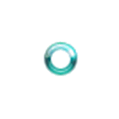

Introduction
Mouse wait is officially called Windows wait cursor,also known as busy cursor, which is a mouse icon status that indicates that mouse cursor is busy or processes are busy performing operations and set the cursor to the busy state [1]. <\p>
Figure 1. Win10 wait cursor
Figure 2. Mac wait cursor

When the mouse icon changes to Windows wait cursor status, spinning wheel incident happens and causes users to wait for current mouse wait to finish before interacting with applications. The problem is that most mouse wait events are unexpected and users are not willing to wait if it lasts a longer than 1-2 seconds. If we are able to predict the mouse wait time, users could terminate their processes ahead of time when they know it might be a long-term wait.Currently, most studies online is about fix or prevent mouse wait event, but there is no research conducted on the mouse wait time prediction, which tells users the expected mouse wait times.
In our study, we will build a classification model to predict mouse wait by separating the wait time into three groups: 0-5 sec, 5-10 sec, and 10+ sec. The reason we classify the time in this way is that were gard 0-5 sec as short wait time, 5-10 sec as medium wait time, and 10+ sec as long wait. Features of our model include dynamic system information and static system information, which will be introduced in the following sections. So far, as for the model, Decision Tree Classifier has the highest accuracy with fair model evaluation.
Data
Data Collection
Intel® System Usage Report (SUR) collector XLSDK is a framework that used to collect data for this project. In the data collection process, we implement input libraries (IL) that collect comprehensive raw data from computer and then implement Analyzer TaskLibraries (ATL) to clean and process these raw data.
At the beginning, Intel® Energy Checker SDKEnergy Server (ESRV) executes IL files to collect samples every second. After ESRV finishes collecting data, it writes raw data into Database (DB) file. Next,when ATL file is executed, it reads the DB file and processes raw data collected from the ILs, and outputs data into log files corresponding to each GUID (GlobalUnique Identifier for each computer). In the end, log files are uploaded to online server for further analysis.
User wait input library is a Dynamic Link Library(DLL) file.During the collection process, ESRV executes this file’s function every 0.1 second and also at any moment when user click any mouse button.At each iteration, User wait IL uses Windows APIGetCursorInfo and GetIconInfo to capture and analyze the mouse icon. GetCursorInfo returns the position of cursor and a handler to cursor. By inputing this handler to GetIconInfo, it will return the icon status of cursor.When it returns a Windows wait cursor, ESRV records the current time and mouse wait event. After ESRV finishes its collecting process, it outputs raw mouse wait data to DB file with variable name and variable type defined in User wait IL. Since samples are collecting at every 0.1 second. Any event less than 0.1 second can’t be detected. However, these events are transient and human can’t even perceive them, so missing these events will be of no significance.
After recording the mouse wait event, we also need to know the dynamic system information when events are happening. It will be the best if we can collect system usage of the process that is responsible.However, it is hard to tract which application causes the mouse wait event since OS can cause a mouse wait at any time.Therefore, we decide to collect all processes’ system usage when mouse wait event happens. Besides User wait IL, we have Process IL.ESRV executes the Process IL to record comprehensive information of each process. At each iteration, It calls the Windows API ZwQuerySystemInformation and OpenProcess. ZwQuerySystemInformation will list all processes and its PID (process ID) currently running on the system and OpenProcess utilizes PID to collect each process’s system usage like process name, running time, I/O usage, memory usage, disk usage and page fault. Unlike User wait IL which records data only when it encounters spinning wheel incident event, the ProcessIL records and writes all data it captures every second.
After the raw data is collected and saved as raw DB file, analyzer tasks read the file and analyze them by language C and SQL. Since all measurements by ILs are timestamped, the start time (ts) of a mouse wait event is the timestamp of the first row of that mouse wait event.The duration (waitmsec) of the mouse wait event is the timestamp difference between the first row and last row of that mouse wait event. By using the ts of mouse wait event, ATL can locate the processes in plist data set that has the same ts, which are running processes during mouse wait event, and compute CPU-util, Disk-Util,Network-util and Hard Page Fault. These features will be saved as mousewaitall log file. In the file, each row denotes a mouse wait event and each column denotes system usage related to one mouse wait event.
| number rows | number of Guid | |
|---|---|---|
| Whole (2020) | 14,534,433 | 29,587 |
| Train (2020.Oct) | 1,729,282 | 16,778 |
| Test (2020.Nov) | 1,488,682 | 15,702 |
At the beginning, we implement our own XLSDK and ATLASK and do the data collection on local computers, but then we realize the scale of data sets is too small and may cause the model has high bias. We need more data from all kinds of users. Since we don’t have resource to access such many users, Intel team collect and provide us with data sets. Data sets includes 14,534,433 rows with 29,587 unique GUID within the 2020 interval. Since the complete dataset is fairly large, we choose all rows within 2020 October interval as train set and choose all rows within next month, 2020 November, as test set for our model. In the train set,there are 1,729,282 rows and 16,778 distinct GUID. In the test set, there are 1,488,682 rows and 15,702 distinctGuid. For the target feature waitmsecs, we divide the wait time into 0-5s, 5-10s and 10+s as a preparation for the classification model. After exploring the correlation between potential features and the mouse wait time, we find that dynamic features, including CPU utilization,disk utilization, hard page faults, and static features,including the number of cores, RAM, model type, etc,could influence the mouse wait time. These features are then incorporated in the model.